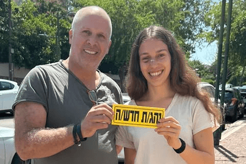
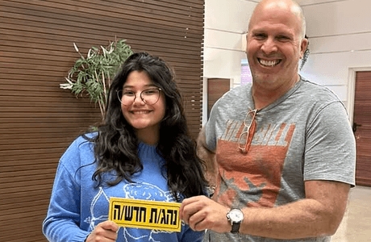
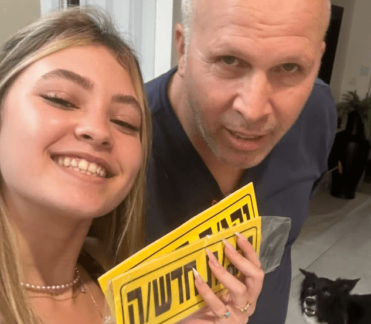

ללמוד לקרוא את הכביש
קורס דיגיטלי שמחבר בין חוקי הדרך למצבים שפוגשים באמת בנהיגה.


-


-


-


-


-


-


נעים להכיר, אורן בכור
מורה נהיגה מוסמך מנתניה, עם יותר משמונה שנות ניסיון בהוראת נהיגה על ידני ואוטומת.
בניתי את הקורס כדי שאפשר יהיה להבין זכויות קדימה ונהיגה נכונה גם בתיאוריה וגם דרך מצבים אמיתיים.
להבין את החוק לפני הרגע שבו צריך לפעול
בשיעור הנהיגה מתרגלים את הפעולה. כאן עוצרים לרגע כדי להבין את ההיגיון שמאחוריה.
הקורס עוזר לחבר בין התיאוריה לבין מה שרואים דרך השמשה. הוא לא מחליף את מורה הנהיגה, אלא נותן בסיס ברור יותר לתרגול המעשי בשיעור.
הנושאים שילמדו אתכם לחשוב כמו נהגים
בחרו נושא וקבלו הצצה למה שמפרקים ומתרגלים בקורס.
זכויות קדימה ופניות
לקרוא את מבנה הצומת, להבין את מדרג הציות ולדעת מתי ולאן אפשר לפנות בבטחה.
ההסבר המלא מלווה בדוגמאות ובסרטונים ממצבי נהיגה אמיתיים.